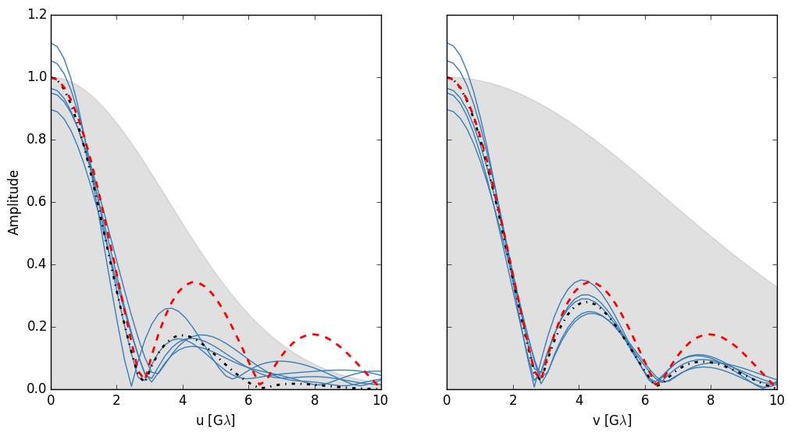

Ensemble average¶
This example demonstrates how the ensemble average image can be reconstructed by averaging many instances of the average image. It also briefly explores the consequences of deblurring using the kernel of the ensemble average. The python script covers:
- Generating many instances of a scattered image.
- Calculating visibility profiles.
- How to deblur visilities (see Fish et al. 2014).
First we will load our modules and set some defaults
import numpy as np
import matplotlib.pyplot as plt
from palettable.cubehelix import jim_special_16
from palettable.colorbrewer.qualitative import Dark2_5
cmap = jim_special_16.mpl_colormap
plt.rcParams['image.origin'] = 'lower'
plt.rcParams['axes.color_cycle'] = Dark2_5.mpl_colors
# don't forget ScatterBrane!
from scatterbrane import Brane,utilities
# set up logger
import logging
logging.basicConfig(level=logging.INFO)
logger = logging.getLogger()
For this example our source structure is a ring: .. code-block:: python
- def source_model(nx,dx,radius,width):
- sigma = width / (2 * np.sqrt(np.log(4))) / dx x = np.dot(np.transpose([np.ones(nx)]),[np.arange(nx)-nx/2]) r = np.sqrt(x**2 + x.T**2) m = np.exp(-0.5/sigma**2*(r-radius/dx)**2) return m/m.sum()
nx = 256 dx = 0.75 m = source_model(nx,dx,28.,10.)
We will generate a large set of scattered images, summing them so that we can see the averaged image. In addition, we will record the visibility profile along the u and v axes.
# initialize the scattering class
b = Brane(m,dx,wavelength=1.3e-3,nphi=(2**12,2**12),screen_res=6,r_inner=50)
# points along the uv axes where to record the visibility
u = np.linspace(0.,10e9,num=50)
# generate a bunch of scattering instances
u_vis = []
v_vis = []
num_sims = 100
avg = np.zeros_like(b.isrc)
for i in range(num_sims):
# create a new instance of the random phases
b.generatePhases()
# calculate the scattered image
b.scatter()
# keep track of the average
avg += b.iss
# calculate the visibility function along the u and v axis.
u_vis.append(np.array([utilities.FTElementFast(b.iss,b.dx,[u_,0]) for u_ in u]))
v_vis.append(np.array([utilities.FTElementFast(b.iss,b.dx,[0,u_]) for u_ in u]))
# finish average calculation
avg /= num_sims
ScatterBrane comes with some helpful functions including one to generate the ensemble averaged image. We will also calculate the ensemble and source visibility profiles
# the ensemble average image
ensemble = utilities.ensembleSmooth(b.isrc,b.dx,b)
# the source and ensemble visibility profiles
u_src = np.array([utilities.FTElementFast(b.isrc,b.dx,[u_,0]) for u_ in u])
v_src = np.array([utilities.FTElementFast(b.isrc,b.dx,[0,u_]) for u_ in u])
u_ens = np.array([utilities.FTElementFast(ensemble,b.dx,[u_,0]) for u_ in u])
v_ens = np.array([utilities.FTElementFast(ensemble,b.dx,[0,u_]) for u_ in u])
Now compare the images of ensemble (left) and avg (right):
Next I will plot the amplitude of the source (dashed red) and ensemble average (dashed-dot black) visibility profiles against baseline. The thin blue lines show 5 examples of scattered amplitudes and the gray shaded region shows the shape of the ensemble average scattering kernel (from Bower et al. (2006)).
To deblur the scattered images we can divide the visibilities by the kernel of the ensemble average.
# calculate the ensemble average convolution kernel
u_kernel = utilities.getUVKernel(u,np.zeros_like(u),b)
v_kernel = utilities.getUVKernel(np.zeros_like(u),u,b)
# divide the visibilities
plt.plot(u/1e9,np.abs(np.array(u_vis).T/u_kernel[:,np.newaxis]),color='#377EB8')
Plotting below, the legend is the same as before except now the thin blue lines have been deblurred and the black line shows the deblurred ensemble average image.

So while this method works very well on the ensemble average image, it fails catastrophically where the scattering kernel approaches zero (i.e. long baselines). This is because we are dividing by a small number and amplifying the error from the scattering. Plotting the RMS error of the visibility amplitude between the averages of N deblurred scattered and ensemble average visibilities shows how this error reduces as N increases: